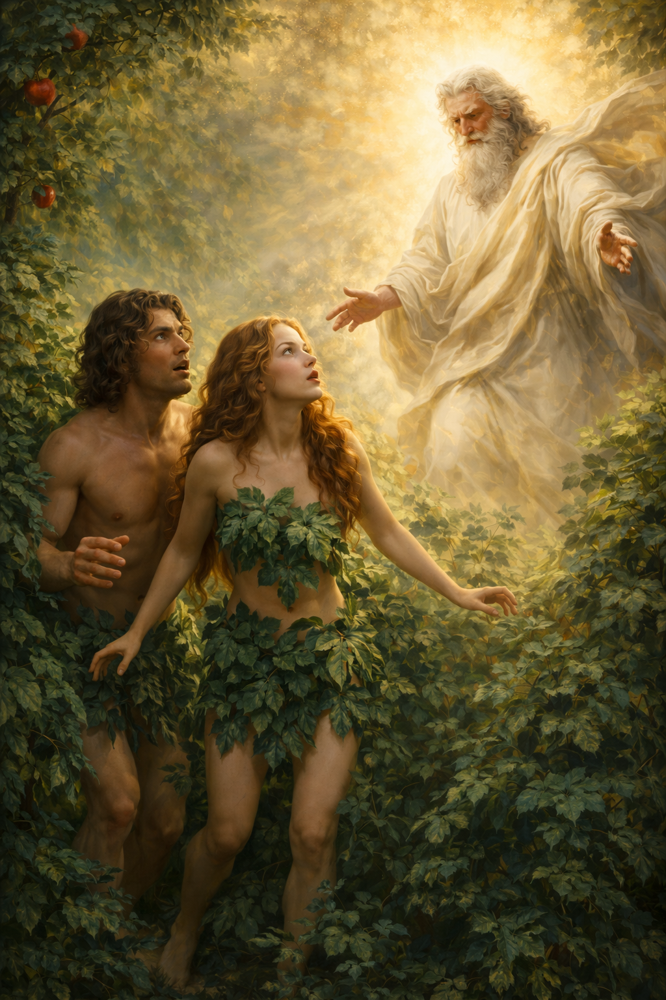

When Adam also ate the fruit his eyes were also opened and when they both realised they had no sort of coverings on, they hid and made coverings out leaves from bushes. When GOD casme to them to have their fellowship time he didn't see them anywhere when GOD called out their names they came out of the bushes and he asked them why they were hiding, Adam said to GOD that he noticed they had no coverings so he hid and when GOD asked them if they ate from the tree he told them not to Adam replied to GOD "it was the woman you gave to be with me she gave me the fruit and I ate" nwhen GOD asked Eve what she had done Eve said "the serpent deceived me and I ate".
